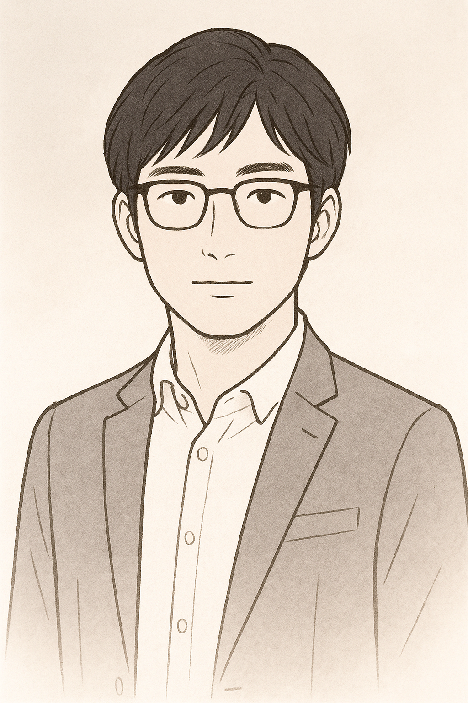

About

Illustration by Takashi Kamoshita
「知性こそが、唯一の武器である。」
はじめまして、鴨下孝史(PHD_TK)と申します。
大学卒業後、情報学を軸に「知識の体系化」と「自分自身の成長」をテーマに学びを続けています。
私は、知識とは単なる情報の集積ではなく、「行動変容を促すエネルギー」であると考えています。
このサイトは、日々の気づきやインサイトをアーカイブし、自己変革を促す触媒として機能することを目指しています。
知識を積み重ね、体系化することは、人生の航路を設計する上で不可欠な要素です。
将来的には、分野横断的な視点から、データサイエンスと人文知の融合を模索し、より実践的な知の活用モデルを構築していきたいと考えています。
微力ながら、この場が誰かの知的好奇心を刺激する存在となれば幸いです。
Scientia potentia est.（知は力なり）